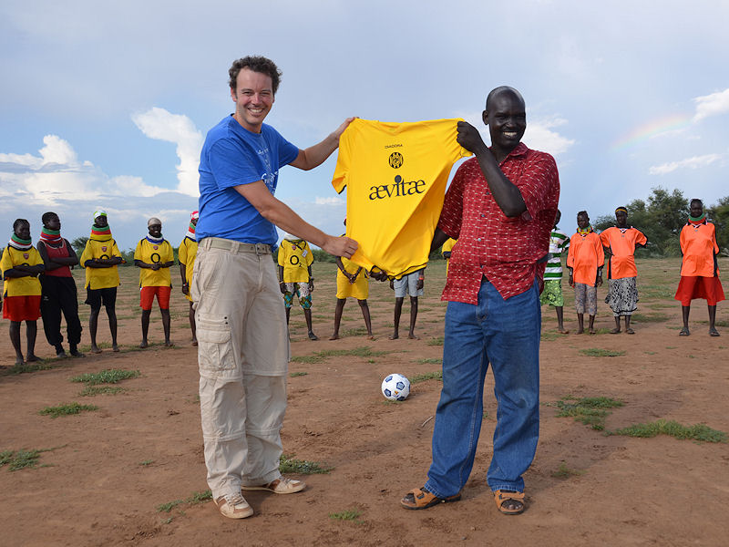

|
|
|||
He Rodafans,
In de bijlagen een paar foto's die ik deze
week heb gemaakt in Kenia. Ik ben hier namens Vodafone's World of
Difference, om samen met iemand van de stichting oneMen foto- en
videomateriaal te verzamelen voor deze stichting. Ik bezoek 4 verschillende
projecten. Als jullie het leuk vinden mogen jullie deze op jullie websites
plaatsen (feel free).

Ik heb een
shirt aan Augustine Kai gegeven. Hij is de oprichter van LOKADO, een
organisatie die zich inzet om vrede te brengen in het noordwesten van Kenia,
waarbij ze samenwerken met organisaties in Oeganda en Soedan. In dit grote
gebied wonen veel nomadenstammen die elkaar afmaken en elkaars vee stelen.
Deze organisaties organiseren voetbalwedstrijden tussen deze stammen en
praten met ze over vrede. Dit is een groot succes.
Ik heb een wedstrijd bezocht waarbij
twee meisjesteams tegen elkaar speelden. Ze spelen op blote voeten en
het veld is een drama, maar voor hen maakt dit allemaal niet uit. Als er
een overtreding wordt gemaakt en iemand hard op de grond valt, ligt het
publiek in een deuk en juichen ze allemaal. Er is veel onderling respect
en na de wedstrijd wordt er met elkaar frisdrank gedronken en
nagekletst.
Ik zit nu in het UN kamp van Kakuma (in
het vluchtelingenkamp van Kakuma verblijven ongeveer 100.000
vluchtelingen) en heb de foto's van de strijders gemaakt in een gebied
waar toeristen niet komen en zelfs de UN het te gevaarlijk vindt.
Ik heb, voordat ik vertrok, aan Roda
gevraagd of ze een nieuw shirt (Accon Avm) wilden sponsoren (en
uitgelegd wat ik ging doen), maar Roda was niet bereid om dit te
sponsoren. M'n zwager had nog een shirt met Aeviae erop en dat heb ik
laten bedrukken in de fanshop (en hiervoor hoefde ik niets te betalen!
).
Succes dit weekend tegen Twente. Helaas
ben ik dan nog niet terug en moet ik deze wedstrijd missen.
Groeten,
Robert (Lange)
|
|
||